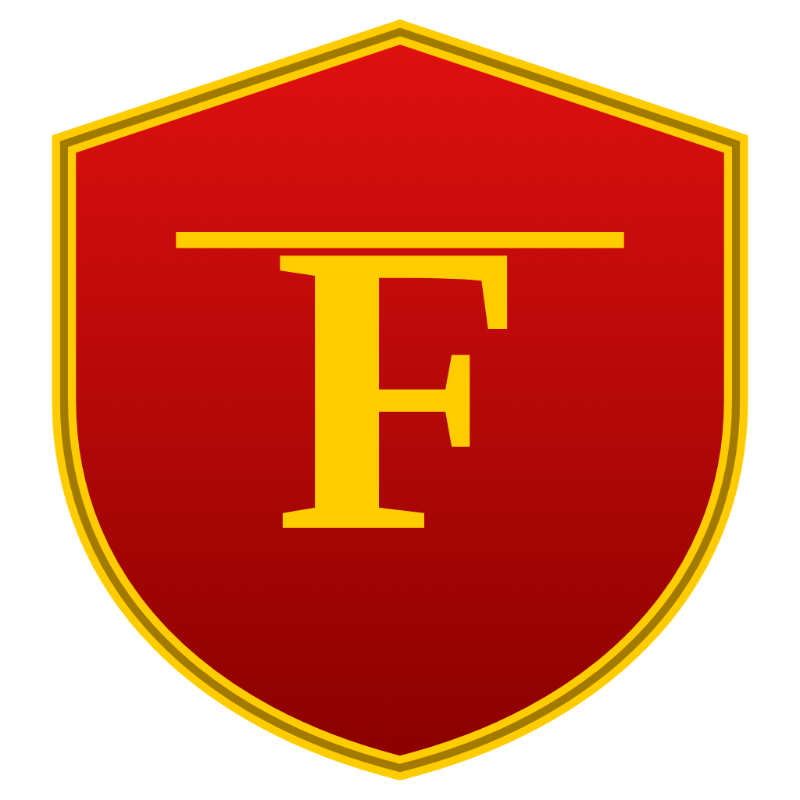
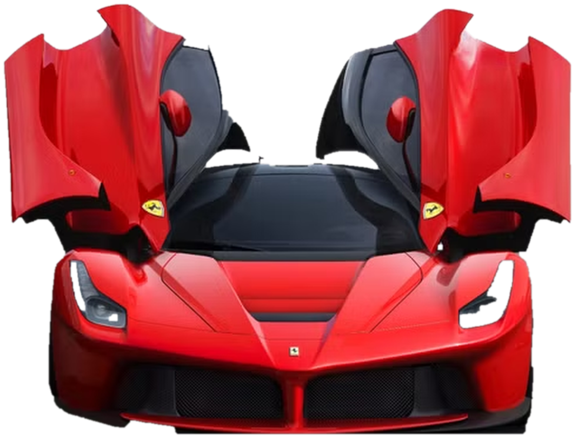

Ferrari
-MasterPiece Of SuperCar-

-MasterPiece Of SuperCar-
Ferrari adalah produsen mobil sport mewah asal Italia yang terkenal dengan performa tinggi dan desain ikonik. Didirikan oleh Enzo Ferrari pada tahun 1939, merek ini telah menjadi simbol kecepatan, kemewahan, dan prestise di dunia otomotif. Ferrari juga memiliki sejarah panjang dalam balap Formula 1

Enzo Ferrari (1898-1988) adalah pendiri Ferrari. Ia memulai kariernya sebagai pembalap sebelum mendirikan Scuderia Ferrari pada tahun 1929, yang kemudian berkembang menjadi produsen mobil sport terkenal di dunia. Enzo dikenal karena dedikasinya terhadap inovasi dan performa tinggi dalam dunia otomotif.

Email: pangeranjrrzz@gmail.com
Phone: +62 819-9045-4320